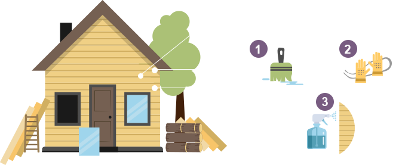

Подготовка швов к герметизации
1этап
Подготовка поверхности
Сначала швы очищаются от старого уплотнителя, загрязнений, пыли, лака или воска, ухудшающих адгезию герметика к поверхности древесины. Затем они обезжириваются (при необходимости) и высушиваются.2этап
Утепление
В швы закладываются теплоизоляционные шнуры. Помимо теплоизоляции они способствуют сцепляемости герметика с бревнами только в двух точках, что в дальнейшем позволяет ему работать как эластичной резине между двумя поверхностями. Кроме того, использование теплоизоляционных шнуров позволяет уменьшить расход герметика.3этап
Увлажнение
Для лучшего сцепления герметика с поверхностью дерева шов увлажняется при помощи пульверизатора или влажной губки. При этом необходимо избегать образования скоплений воды.Заполнение швов герметиком
1этап
Нанесение герметика
Состав наносится с помощью монтажного пистолета равномерным слоем толщиной 4-6 мм.2этап
Разглаживание
Выполняется в течение 15 минут после нанесения герметика. Для этого с помощью специальных лекал или узких шпателей состав разглаживается для придания шву эстетичного вида. Чтобы герметик не прилипал к инструменту, его допускается смачивать в мыльном растворе. Излишки состава удаляются влажной губкой. После этого в течение 1 часа происходит полимеризация герметика (образование прочной и эластичной пленки). Для его полного высыхания понадобится от 2 до 8 недель.Дополнительная защита швов
После завершения процесса полимеризации герметика состав покрывается одним или двумя слоями лакокрасочного материала любого цвета. Он выполняет одновременно защитную и декоративную функции.
Разработано: